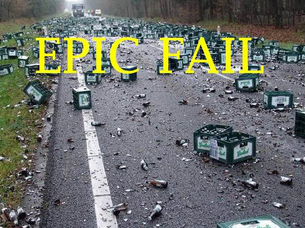
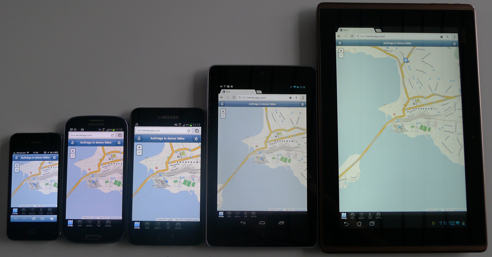
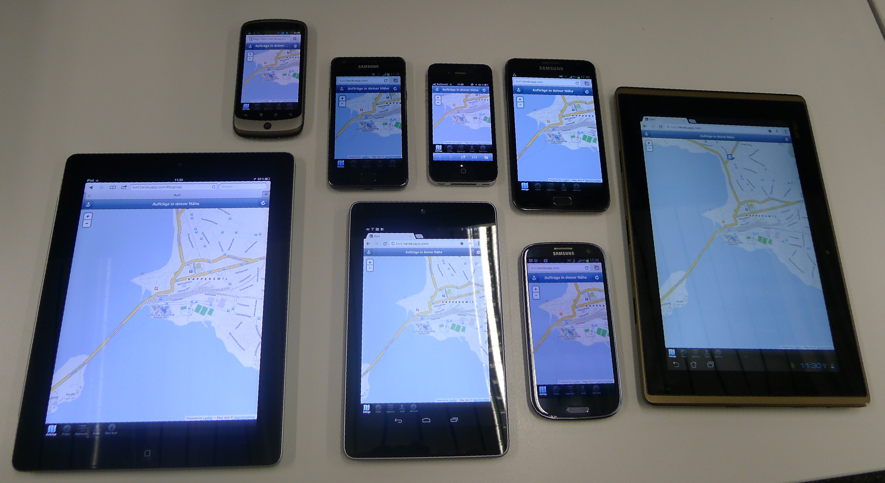
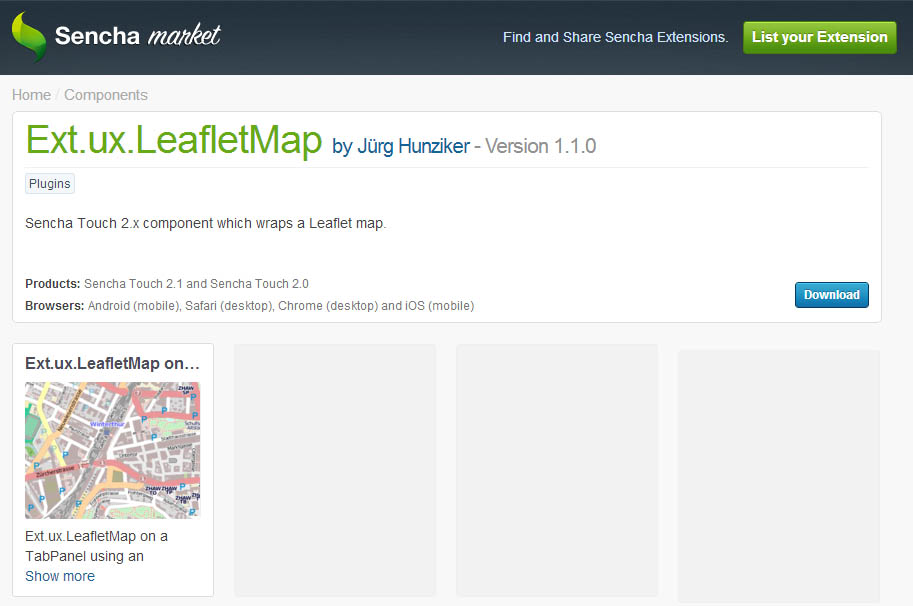
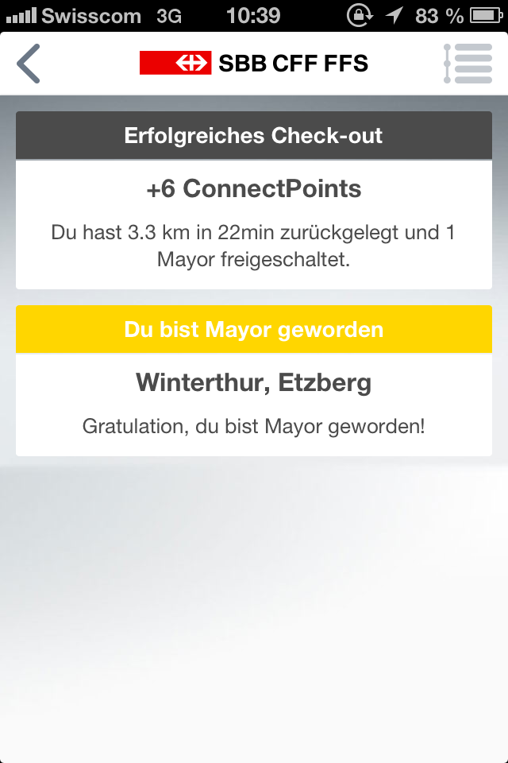
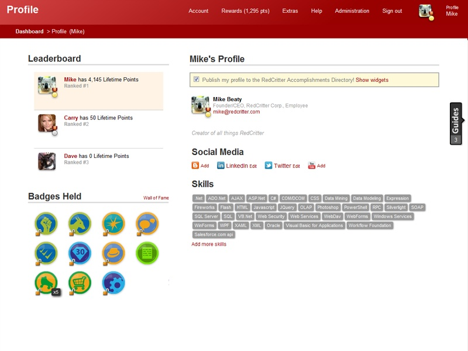

Kort
Gamified Mobile App zur Verbesserung von OpenStreetMap
- Arbeit:
- Bachelorarbeit HS2012/13
- HSR Hochschule für Technik Rapperswil
- Entwickler:
- Jürg Hunziker (@tschortsch85)
- Stefan Oderbolz (@odi)
15. Januar 2013
Le Team

Jürg Hunziker

- Webentwickler, Stadt Winterthur
- Interessen: Design, Webtechnologien
- Fokus: Frontend-Entwicklung
- Twitter: @tschortsch85
Stefan Oderbolz

- Webentwickler, Liip AG Zürich
- Interessen: Automatisierung, Architektur
- Fokus: Backend-Entwicklung
- Twitter: @odi
Verfolgen
Tweet about it!
#kort
Ziele der Arbeit
- App für verschiedene mobile Betriebssysteme (cross-platform)
- Implementation als Webapplikation (WebApp)
- OpenStreetMap-Daten korrigieren
- Vorhandene Benutzer-Basis verwenden
- Als Spiel gestalten
OpenStreetMap
- Frei nutzbare Geodaten
- Über 1 Million registrierte Benutzer
-
Fehlende/falsche Daten
- Strasse ohne Namen
- Fehlendes Tempolimit
Kort
- WebApp basierend auf HTML5 und JavaScript
-
OpenStreetMap-Fehler
- Auf Karte darstellen
- Beheben
- Lösungen validieren
-
Spielelemente
- Punkte (Koins)

- Auszeichnungen

- Highscore
- Punkte (Koins)
Demo

Wie bitte?

Login (OAuth)
- Standard für Authentifizierung
- Freigabe von Daten oder Diensten
- Vor- und Nachname
- Kalender
Ablauf

Fehlerquellen

Anforderungen
- Für Nicht-Mapper lösbar
- Übersetzbar ➔ Kein Freitext
- Nur Fehler in Metadaten ➔ Kein Editor
- Automatisiert UI zur Lösungseingabe erstellen
- API verfügbar
Mögliche Quellen
- Direkt aus OpenStreetMap ➔ aufwendig
- FIXME-Tags ➔ nicht standardisiert
- OpenStreetBugs ➔ nicht standardisiert
- Housenumbervalidator ➔ nur 1 Fehlertyp
- KeepRight
- Erstellt durch automatisierten Job
- Daten werden als Dump-File angeboten
- Lösungen nur zu OSM zurückschreiben
Cross-platform WebApp
- Sencha Touch 2 Framework
- JavaScript Framework für mobile Web-Applikationen
- Verwendet Web Standards (HTML5, CSS3)
- Unterstützung für WebKit-Browser
- Mobile: iOS, Android, BlackBerry
- Desktop: Chrome, Opera, Safari
Vorher
Nachher

Wait there is more!

OSM-Daten in Sencha Touch
- Nur Google Maps Komponente
- Neue Komponente basierend auf Leaflet.js
- Im Sencha Market veröffentlicht!

REST Schnittstellen
REST Schnittstellen
- Architekturentscheid
- Sprachunabhängigkeit
- Komponenten voneinander unabhängig
- Erweiterbarkeit
Problem ➔ Konsistenz
Transaktionen
- Mehrere REST-Requests ➔ Inkonsistent
- Zusammenfassen der Änderungen in einem Request
➔ Best practice für Webapplikationen - Ausführen der Änderungen in einer Datenbanktransaktion
➔ Alles oder nichts (ACID)
➔ Konsistent
Deployment

Probleme
Probleme
-
Nicht genügend Fehlerdaten
OpenStreetMap hat zu wenige Fehler ;-) - Gamification zeitaufwändig
- Zurückschreiben der validierten Lösungen
Zurückschreiben der Lösungen
-
OSM Stammtisch
➔ Technischer Benutzer nicht erlaubt (?) - Fehlende Zeit
-
Übergangslösung:
➔ Proposals auf www.kort.ch
Gamification
Als Gamification bezeichnet man die Anwendung spieltypischer Elemente und Prozesse in einen spielfremden Kontext.Quelle: Wikipedia
Gamification
- Typische Elemente
- Punkte
- Auszeichnungen
- Highscore
➔ Ziel: Attraktivität der Arbeiten steigern
SBB.Connect

- Im Dezember 2012 lanciert
- Ein- und Auschecken in öffentlichen Verkehrsmitteln
- Gewinnen von ConnectPoints und Badges
- Highscore
- Mayor von Haltestellen werden
- Könnte den "Vo-wo-bis-wo-fahred-si"-Kontrolleuren ablösen
RedCritter Tracker
- Gamified Agile Project Management
- Mehr Punkte für unbeliebte Stories
- Belohnungen für Arbeitsalltag

Projektmanagement
- Scrum
- Leicht angepasstes Vorgehen
- 3 Sprints à 2 Wochen
- 2 Sprints à 3 Wochen
- Offen für Änderungen
- Timeboxed
- Dynamisches Scoping
➔ Agile Methodik bewährte sich
Meilensteine
- ✓MS1: Aufbereiten von Fehlerdaten
- ✓MS2: Lesen von Fehlerdaten
- ✓MS3: Kartenanzeige von Fehlern
- ✓MS4: OAuth
- ✓MS5: Schreiben von Lösungsvorschlägen
- ✓MS6: Validieren von Lösungsvorschlägen
- ✓MS7: Gamification-Konzepte
- ✗MS8: Daten zu OSM schicken
Weiterentwicklung
- Folgearbeit von Prof. S. Keller ausgeschrieben
- Internationalisierung
- Vorhanden: Deutsch, Englisch, (Italienisch)
- In Vorbereitung: Portugiesisch, Türkisch, Slovenisch, Rumänisch, Niederländisch, Spanisch, Katalanisch
- Offene GitHub Issues: 12
Fakten über Kort
- Benutzer
- OpenStreetMap:
- Google:
- ⇒ Total: !
- Überprüfungen:
- Lösungsvorschläge:
Kort ist LIVE!
➔ Beginne noch heute Koins zu sammeln.
play.kort.ch
Fragen
?
TODO
- Section image: REST
- i18n flags